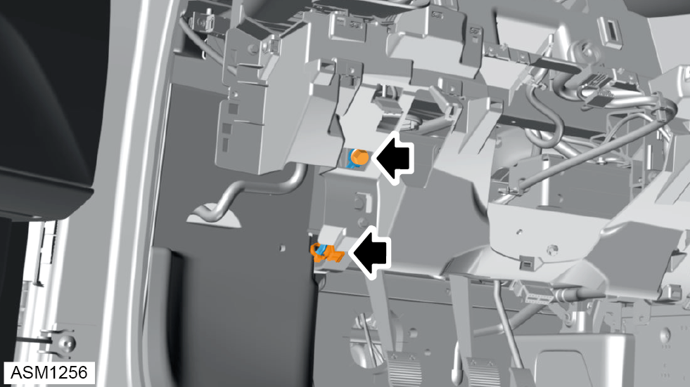
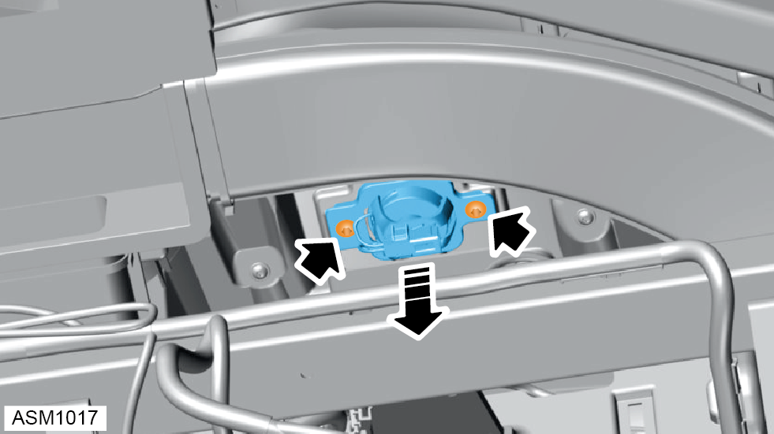
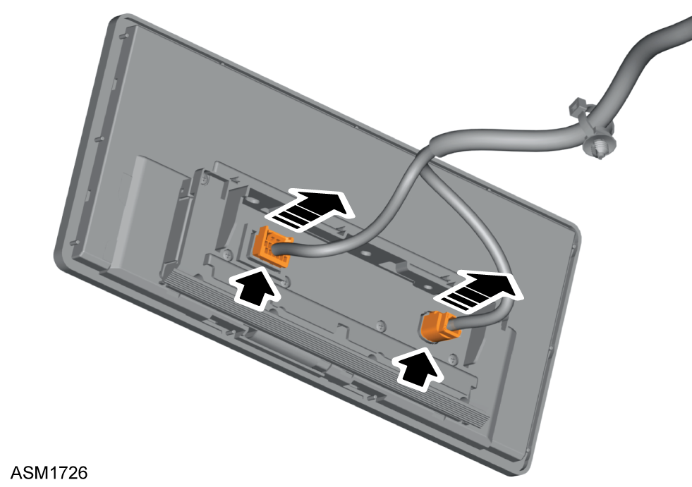
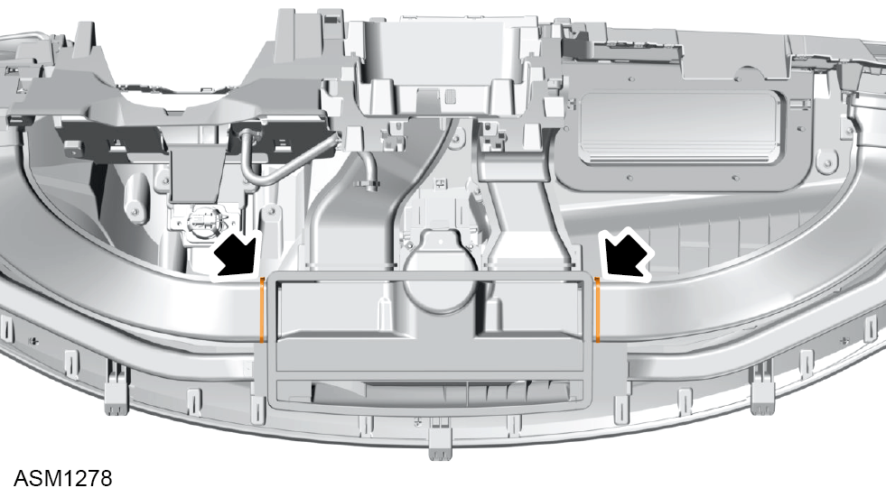

Instrument Panel Assembly
Print
Operation Code: 14.05.39-02
Removal
- Remove lower fascia panel. Refer to procedure.
- Remove A pillar trim left side. Refer to procedure.
- Remove A pillar trim right side.
NOTE: Procedure is the same as for left side component.
- Remove centre console assembly. Refer to procedure.
- Remove drivers stalk module. Refer to procedure.
- Remove passenger footrest. Refer to procedure.
- Remove M8x20 bolts (x2) securing passenger airbag bracket to underbody assembly. Torque 20 Nm.
- Remove M6 bolt securing ground strap to cross car beam.
- Remove ground strap from cross car beam.
- Disengage fir tree clip securing harness to cross car beam.
- Disconnect harness connectors (x6).
- Disengage fir tree clips (x2) securing harness to vehicle.
- Pull harness through aperture.

- Remove M6 bolt securing ground strap to cross car beam.
- Remove M5x12 bolts (x2) securing footwell duct to instrument panel beam and position aside. Torque 5 Nm.
- Disengage fir tree clips (x2) securing instrument panel harnesses for ODB2 port, footwell lamp and driver stalk module.
- Disengage clamp securing instrument panel air duct to instrument panel.
- Disconnect instrument panel air duct.
- Remove M6x45 bolts (x4) securing cross car beam to vehicle. Torque 7 Nm.
- Pull harness and connector through aperture to access bolt.
NOTE: Bolt accessed from under and behind instrument panel assembly.
- Remove M6x45 bolts (x4) securing cross car beam to vehicle. Torque 7 Nm.
- Release tabs (x3) securing instrument panel to vehicle.
NOTE: Retain rubber boots.
- Using assistance remove instrument panel assembly.
 CAUTION: Take care not to damage harness while removing instrument panel assembly.
CAUTION: Take care not to damage harness while removing instrument panel assembly.
CAUTION: Place on secure and suitable surface to prevent damage.
Do not carry out further disassembly if removing for access only.
- Remove left side air duct outlet.
- Remove right side air duct outlet.
- Remove self tapping screws (x2) securing defroster vent to instrument panel.
- Remove defroster vent.
- Disengage clips (x4) securing left side face level vent to instrument panel.
- Remove left side face level vent.
- Disengage clips (x4) securing right side face level vent to instrument panel.
- Remove right side face level vent.
- Disconnect harness connector from E-call speaker.

- Remove self tapping screws (x2) securing E-call speaker to fascia panel.
- Remove E-call speaker.
- Release clips (x8) securing centre vent to instrument panel.
- Remove centre vent
- Remove M4x16 self tapping screws (x4) securing infotainment screen to instrument panel.
- Remove M4x16 self tapping screws (x3) securing bracket to infotainment screen.
- Remove bracket from infotainment screen.

- Disconnect harness connectors (x2) from infotainment screen.
- Remove 4x16 self tapping screws (x4) securing middle dash panel to instrument panel.
- Release trim clips (x7) securing middle dash panel to instrument panel.
- Remove middle dash panel.
- Remove 4x16 self tapping screws (x3) securing instrument panel cap to instrument panel.
- Release trim clips (x3) securing instrument panel cap to instrument panel.
- Remove instrument panel cap.
- Remove 4x16 self tapping screws (x2) securing instrument pack cover to instrument panel.
- Release clips (x8) securing lower instrument pack cover to instrument panel.
- Remove instrument pack cover.
- Disconnect harness connectors (x2) from instrument pack.
- Remove screws (x2) securing instrument pack to instrument panel.
- Release upper tabs (x2) securing instrument pack to instrument panel.
NOTE: Drop instrument pack down slightly and then lever out to release the upper tabs.
- Remove instrument pack.
- Use suitable flat bladed trim removal tool to carefully disengage clips (x10) to release sun sensor/speaker panel from facia.
- Lift sun sensor/speaker panel to gain access to sun sensor harness connector and disconnect.
- Remove 4x16 self tapping screws (x3) securing speaker to windscreen defroster panel.
- Lift fascia speaker to gain access to harness connector and disconnect.
- Disconnect harness connectors (x2) from passenger airbag module.
 WARNING: Refer to all warnings and cautions before working on the SRS system.
WARNING: Refer to all warnings and cautions before working on the SRS system.
WARNING: The Sensor and Diagnostic Module (SDM) can maintain sufficient voltage to cause an airbag deployment for up to 20 seconds after the battery has been disconnected. Before working on the airbag system, or in close proximity to an airbag, wait at least 30 seconds before commencing work.
WARNING: Safety precautions must be observed when handling a deployed inflator module. After deployment, the air bag surface may contain a white packing powder used to ease deployment. Always wear gloves and safety glasses when handling a deployed inflator module and wash your hands with a mild soap and water afterwards.
WARNING: When working on the SRS system, correct PPE should be worn at all times including an anti-static wrist band.
- Remove nuts (x4) securing passenger airbag to bracket.
- Remove passenger airbag bracket.
- Remove M6 nuts (x6) securing passenger airbag module to instrument panel. Torque 10 Nm.
- Remove passenger airbag module.
WARNING: When carrying a live inflator module, make sure the bag and trim cover are pointed away from you. In case of an accidental deployment, the bag will then deploy with minimal chance of injury.
WARNING: When placing a live inflator module on a bench or other surface, always face the bag and trim cover upwards, away from the surface. This is necessary so that a free space is provided to allow the air bag to expand in the unlikely event of accidental deployment. Otherwise, personal injury may result.
WARNING: Never carry the inflator module by the wires or connector on the underside of the module.
- Disengage fir tree clips (x4) securing harness to cross car beam.
- Carefully remove harness from instrument panel assembly.
- Remove M5x16 bolts (x7) securing cross car beam to instrument panel.
- Remove cross car beam from instrument panel.

- Remove cable clips (x2) securing mid air outlet ducts (x2) to defroster outlet.
- Remove self tapping screws (x2) securing left side air outlet duct to instrument panel.
- Remove self tapping screws (x2) securing left side air outlet duct to instrument panel.
- Remove mid air outlet ducts from instrument panel.
- Remove self tapping screws (x2) securing defroster outlet duct to instrument panel.
- Remove defroster outlet duct from instrument panel.
- Remove M4x16 self tapping screws (x21) securing fascia top panel to instrument panel.
- Remove fascia top panel.
Installation
- Installation is the reverse of removal procedure except the following:
WARNING: Failure to follow proper SRS inflator module disposal procedures can result in airbag deployment which may cause personal injury. Undeployed inflator modules must not be disposed of through normal refuse channels. The undeployed inflator module contains substances that can cause severe illness or personal injury if the sealed container is damaged during disposal. Disposal in any manner inconsistent with proper procedures may be a violation of federal, state and/or local laws.
- Perform a diagnostic read and clear error memory using Lotus Insight tool.
- Register infotainment screen using Lotus Insight tool.
- Turn on ignition and make sure SRS warning lamp extinguishes.